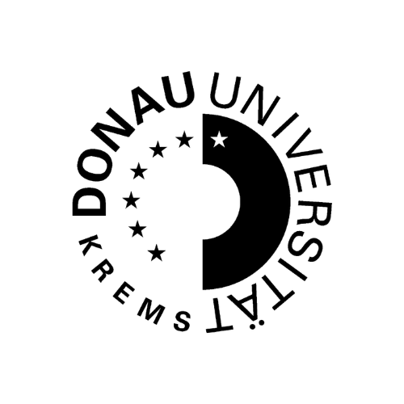
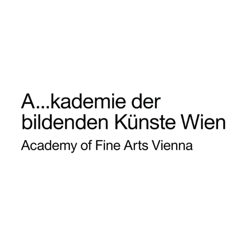
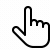

Das Verbundprojekt DiTAH hat wesentlich und nachhaltig zur Etablierung der Digital Humanities in den Geisteswissenschaften in Österreich beigetragen. Ziel des Projekts war es, bestehende Infrastrukturen zu vereinheitlichen und miteinander zu integrieren, Ansätze und Methoden für Forscher:innen der gesamten Geisteswissenschaften aufzubereiten und schließlich die vielfältigen Aktivitäten und Ergebnisse aus dem Projekt zu kommunizieren und nachhaltig zur Verfügung zu stellen. Damit richten sich die Ergebnisse von DiTAH sowohl an interessierte Geisteswissenschafter:innen, die Methoden der DH in ihre Forschung integrieren, als auch an Studierende österreichischer Hochschulen, die ihre Ausbildung um relevante Aspekte digitaler Forschung erweitern wollen.
Abgleich digitaler und traditioneller geisteswissenschaftlicher Methoden: dabei werden Forschungsdaten unter Verwendung von etablierten Standards mit zusätzlichen Daten semantisch ausgezeichnet (Annotation), angereichert und damit für maschinelle Systeme lesbar gemacht. Weiters werden neue Methoden wie die maschinelle Erkennung und Bearbeitung von Bildmaterial (Computer Vision) angewandt. Künstliche Intelligenz unterstützt hierbei zunehmend entsprechende Arbeitsprozesse.
Aufbau einer gemeinsamen Forschungsdateninfrastruktur: Dafür werden technische Lösungen zur Erfassung und Beschreibung von Forschungsobjekten entwickelt. Diese Objekte werden in langfristig betreute Archivierungssysteme überführt, und es werden neue Lösungen für die Speicherung von Bilddaten gefunden.

Neue Methoden und Ansätze werden leicht verständlich aufbereitet: Es werden Tutorials geschrieben, die Methoden und Werkzeuge für Benutzer ohne Vorkenntnisse erklären. Außerdem werden Lösungen entwickelt, wie Forschungsdaten präsentiert und Daten aus verschiedenen Datenbanken abgerufen (Information Retrieval) werden können . Dabei werden innovative Methoden zur Wissensvermittlung genutzt, wie z.B. die Visualisierung von Daten.
Ein Projekt zu Vermittlung und Ausbau digitaler Kompetenzen, Methoden und Infrastrukturen in geisteswissenschaftlicher Forschung und Lehre - gefördert durch das Bundesministerium für Bildung, Wissenschaft und Forschung.
Ziel dieses Projektes ist es, die in den Digital Humanities entwickelten Methoden und Ansätze so zu etablieren und aufzubereiten, dass sie in den alltäglichen Gebrauch geisteswissenschaftlicher Forschung und Nachwuchsbildung übergehen können. Zu diesem Zweck werden gemeinsam entwickelte Lösungen in drei großen Themenbereichen geschaffen: Integration der digitalen Infrastruktur, Aufbereitung und niederschwelliger Zugang zu digitalen Methoden und Tools sowie die Vermittlung digitaler Kompetenzen in Wissenschaft und Lehre. Auf der vorliegenden Plattform werden die Ergebnisse führender österreichischer DH-Standorten gebündelt und dienen den gesamten Geisteswissenschaften als praktische Lösung.

Im Rahmen von CIMA und der damit einhergehenden interdisziplinären Untersuchung von historischen Handschriften entsteht eine Vielfalt an Mess- und Beschreibungsdaten: diese reichen von Aufnahmen mit verschiedenen Wellenlängen (sog. Multi- und Hyperspektralbilder) über spektroskopische und mikrobiologische Materialanalysen, kodikologische und restauratorische Beschreibungen, bis hin zu Transkriptionen und philologischen Editionen.
Die Katalogisierung von Beständen erfolgt in Archiven und Bibliotheken über bibliothekarische Regelwerke. Diese müssen im Laufe der Zeit an veränderte Gegebenheiten angepasst und entsprechend modifiziert werden. Im Teilprojekt RNABle wurde der Prototyp eines solchen Programms fertiggestellt und weitere Funktionalitäten erweitert.

Die Digitale Erinnerungslandschaft Österreichs (DERLA) ist ein Projekt zur Erforschung von österreichischen Erinnerungsorten und -zeichen für die Opfer sowie die Orte des Terrors des Nationalsozialismus. Die Ergebnisse werden auf einer interaktiven und multimodalen Erinnerungslandkarte zusammengeführt, die neben Filter- und Suchfunktionen der niederschwelligen Vermittlung im Bildungsbereich dient.
Die Bedeutung der Digital Humanities spiegelt sich nicht zuletzt im wachsenden Angebot an einschlägigen Ausbildungen wider. Mehrere Projektpartner bereiten Kurse auf und stellen diese dauerhaft zur Verfügung. Diese Unterlagen sind für das Selbststudium konzipiert und richten sich an Lehrende wie Studierende.
An der Paris Lodron Universität Salzburg wurde im Rahmen von DiTAH eine Reihe an längerfristigen Vorhaben der Digital Humanities (u.a. eine Ringvorlesung, ein Wissenschaftsblog, der Umgang mit Repositorien) umgesetzt und dabei auf die nachhaltige Kommunikation mit internen und externen Partnern geachtet.

Im Teilprojekt "Digi 16" wurden bibliografische Daten zu einer historischen Buchsammlung der Universität Graz aus dem 16. Jahrhundert nach aktuellen Standards erstellt und durch objektspezifische Merkmale ergänzt sowie buchhistorisch ausgewertet.

Bei FERCAN handelt es sich um die digitale Edition keltischer Götternamen in lateinischen Inschriften. Neben einer ausführlichen Dokumentation und interaktiven Landkarten sind die einzelnen Datensätze mit externen Datenbanken verknüpft und erlauben auf diese Weise eine umfangreiche wissenschaftliche Auseinandersetzung.

Der über 13.000 Schriftstücke umfassende Briefwechsel des Publizisten Ludwig von Ficker (1880-1967) wurde in diesem Projekt transkribiert, semantisch angereichert (Annotation) und kommentiert. Damit liegt ein umfangreiches Korpus regionalhistorisch relevanter Briefe inkl. Orts- und Namensregister vor, das sich gezielt durchsuchen lässt.
Im Zuge der Digitalisierung werden immer mehr Forschungsgegenstände (Texte, Bilder, Objekte) digital zugänglich. Um diese wissenschaftlich zu verwerten sind semantische Informationen (Metadaten) notwendig. Im Teilprojekt "Foto-Datenbank" wurden bestehende Digitalisaten in einem mehrstufigen Verfahren durch eine formale Repräsentation (Metadaten basierend auf einer Ontologie) ergänzt, die eine wissenschaftliche Bearbeitung erst ermöglichen.

Das virtuelle Gipsmuseum umfasst die Digitalisierung der denkmalgeschützten Sammlungsräumlichkeiten sowie die historischen Gipsabdrücke der Universität Graz in Form von 3D-Modellen. Die Präsentation erfolgt zusammen mit einer Dokumentation der Modelle im Rahmen eines eigens dafür erstellten Portals, das zur Sichtbarkeit einer kompakten Museumssammlung und weiteren Verwendung in anderen Kontexten beiträgt.
Die Digital Habsburg Platform (DHP) zielt darauf ab, Datenressourcen zu Zentraleuropa vom Hochmittelalter bis zur Moderne zusammenzuführen. Das Projekt umfasst die Dokumentation von Workshops zu prosopographischen Projekten, Beispieldatensätze zur Korrespondenz der Brüder Pez OSB, einen regelmäßig erscheinenden Digital-Humanities-Newsletter, einen Überblick über historische DH-Ressourcen in Österreich sowie eine COST-Action zur weiteren Arbeit von 2025 bis 2029.
Bei dem Teilprojekt zum Architekten Clemens Holzmeister handelt es sich um den ersten Versuch, einen umfangreichen Architekturnachlass digital zu erfassen. Dazu wurden Fotografien, Pläne und Zeichnungen zu dem von Holzmeister entworfenen Bauten digitalisiert und mit bestehenden Beständen (u.a. seine Korrespondenz sowie Zeitungsartikel) verknüpft. Dieser einmalige digitale Nachlass ist über ein eigens erstelltes Web-Interface zugänglich und erlaubt eine umfassende wissenschaftliche Bearbeitung.
Das Projekt der Historisch-physikalischen Sammlung zielt auf die digitale Erfassung eines kompakten musealen Sammlungsbestandes ab. Es umfasst die Erschließung und Archivierung von objektbezogenen Daten im Rahmen einer Weboberfläche und ermöglicht die niederschwellige Auseinandersetzung sowie die historische und biographische Kontextualisierung der einzelnen Objekte.
Die European Open Science Cloud (EOSC) zielt darauf ab, eine multidisziplinäre Umgebung zu schaffen, in der Forscher Daten, Werkzeuge und Dienstleistungen veröffentlichen, finden und wiederverwenden können.

Im Rahmen der Multimodalen Manuskriptrepräsentation ist ein Repositorium entstanden, in dem die vielfältigen Mess-und Beschreibungsdaten aus dem Bereich der Handschriftenforschung (CIMA) zusammen mit einer Beschreibung der Arbeitsabläufe archiviert und der Forschungsgemeinschaft dauerhaft zugänglich gemacht werden.

Im Zuge von Forschungsprojekten werden Webanwendungen oftmals unter Zeitdruck und ohne eine langfristige Perspektive konzipiert und erstellt. Das Subprojekt "mūsēum" bietet Forscher:innen die Möglichkeit, alte Webanwendungen einfach zu archivieren und darauf zurückzugreifen.
Die ÖNB Labs, die Plattform für digitale Bestände der Österreichischen Nationalbibliothek, bietet eine Auswahl an Bildmaterialien, Volltexten und Metadaten der eigenen Sammlung an und ergänzt diese um ausführliche Informationen und Anleitungen für den erfolgreichen Einsatz in der Forschung. Das Angebot reicht von individuell gestaltbaren Volltextsuchen (Annolyzer), digital kolorierten historischen Postkarten bis zu vollständig digitalisierten historischen Landkarten (Pasetti).
Für Forscher:innen, die sich mit computerbasierten Methoden beschäftigen, wurden mehrere Formate eingerichtet, die aktuelle Themen, Methoden und Anwendungen niederschwellig vermitteln und dauerhaft zugänglich machen. Dazu zählen Kurzanleitungen (HowTo), Workshops zu spezifischen Anwendungen (Tool Gallery) und Vorträge international anerkannter Expert:innen (Lectures).
Das Teilprojekt "Repositorien Discovery" arbeitete eng mit dem Teilprojekt "EOSC" zusammen, um die Auffindbarkeit geistes- und kulturwissenschaftlicher Forschungsdaten in österreichischen Repositorien zu verbessern. Ziel war es, einen Verbund von Repositorien aufzubauen und deren Lösungen In Bezug auf APIs, Metadatenschemata und Richtlinien zu harmonisieren.
Das Teilprojekt "Hybrid Pipelines" entwickelte das Konzept VELD (Versioned Executable Logic and Data), das mithilfe von Docker und Git flexible und nachvollziehbare Pipelines ermöglicht. Eine prototypische Implementierung wurde erfolgreich durchgeführt, wobei zahlreiche NLP-Pipelines mit historischen Texten erstellt wurden.